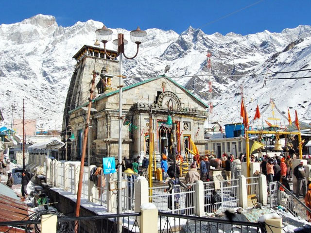
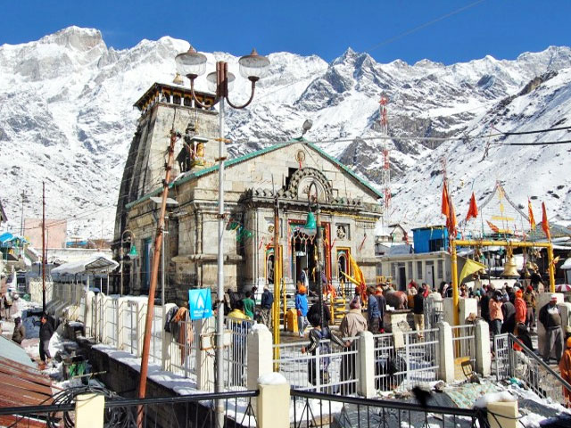

India is a vibrant land of startling contrasts where both the traditional and modern worlds meet. The world'sRed Fort seventh largest nation by area and the second largest in terms of population,Goa-Beaches India boasts a rich heritage that's the result of centuries of different cultures and religions leaving their mark. Things to do for travelers include the opportunity to experience an array of sacred sites and spiritual encounters, while nature lovers will enjoy its sun-washed beaches, lush national parks and exciting wildlife sanctuaries.From the magnificent Taj Mahal in Agra to the holy sites of Harmandir Sahib (formerly the Golden temple Temple) in Amritsar and the Mecca Masjid mosque in Hyderabad, visitors to this exotic country will discover a trove of spiritual, cultural, and historical treasures.Kedarnath To help you make the most of your time in this amazing country, refer often to our list of the top things to do in India.